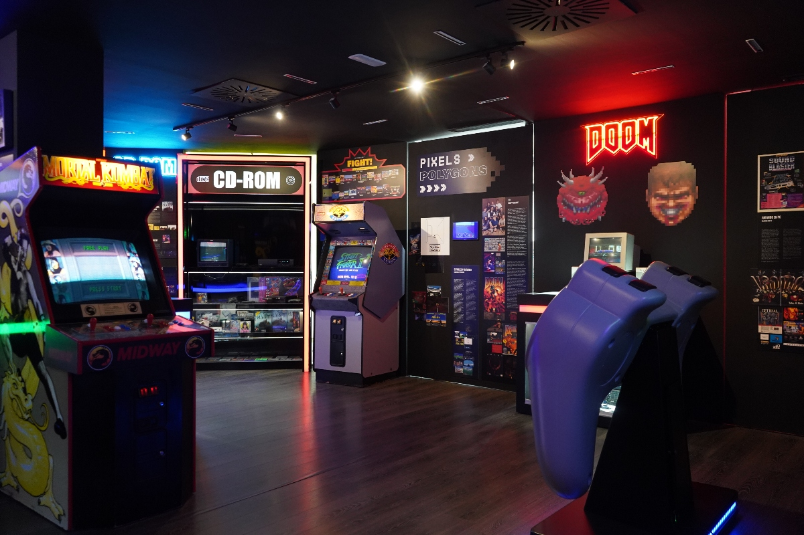

Nuestra misión
En nuestra plataforma creemos que los videojuegos son parte esencial de la memoria cultural moderna.
Nuestra misión es preservar los grandes títulos que marcaron generaciones, rescatando aquellas joyas que definieron épocas y que trazaron el camino de la evolución del medio.
Nos dedicamos a conservar, documentar y difundir obras emblemáticas para que nuevos jugadores puedan descubrirlas y para que quienes crecieron con ellas puedan revivir su legado. Queremos asegurar que la historia del videojuego permanezca viva, accesible y valorada, celebrando tanto su impacto artístico como su importancia en la construcción de la industria actual.
Plataformas más relevantes
En esta sección encontrarás una selección de las plataformas de videojuegos más influyentes de la historia, aquellas que marcaron hitos técnicos, culturales y creativos en la evolución del medio. Desde consolas clásicas hasta sistemas que revolucionaron la forma de jugar, cada enlace te llevará a información detallada sobre su legado, características y el papel que desempeñaron en distintas generaciones. Explora este recorrido por el hardware que dio vida a grandes títulos y ayudó a definir la identidad del videojuego tal como lo conocemos hoy.


Evolución de los videojuegos
A continuación presentamos una tabla con algunos juegos clásicos cuya conservación consideramos esencial. Cada uno de ellos representa un momento clave en la evolución del medio y continúa influyendo en la industria actual.
| Título | Año de lanzamiento | Plataforma original | Aporte a la evolución del género |
|---|---|---|---|
| Pac-Man | 1980 | Arcade | Popularizó los maze games y definió la cultura arcade |
| The Legend of Zelda | 1986 | NES | Introdujo la exploración no lineal y sentó las bases del action-adventure |
| Super Mario 64 | 1996 | Nintendo 64 | Revolucionó el diseño en 3D y estableció estándares para los juegos de plataformas modernos |
| Final Fantasy VII | 1997 | PlayStation | Impulsó la narrativa cinematográfica en los JRPG y expandió su popularidad mundial |
| Half-Life | 1998 | PC | Integró la narrativa en la jugabilidad sin cinemáticas tradicionales, cambiando el FPS para siempre |
| The Elder Scrolls V: Skyrim | 2011 | PC / PlayStation 3 / Xbox 360 | Redefinió el mundo abierto moderno con libertad total, gran escala y un ecosistema dinámico |
Salón de la fama
Pac-Man
Pac-Man se convirtió en un fenómeno cultural desde el momento de su lanzamiento. En una época dominada por shooters espaciales como Space Invaders y Asteroids, este título ofreció una propuesta completamente distinta: un juego de laberintos en el que el jugador debía evitar enemigos y recolectar objetos. Su diseño accesible, colores vibrantes y mecánicas claras lo hicieron atractivo para una audiencia mucho más amplia que la habitual del momento, incluyendo a mujeres, algo poco común en los arcades de la época.
Además de su impacto comercial, Pac-Man definió el subgénero de los “maze games”, creando estándares de diseño que influirían en el desarrollo de futuros títulos. También introdujo elementos novedosos, como los patrones de IA de los fantasmas, que presentaban comportamientos diferenciados y calculados. Con el tiempo, su iconografía se volvió universal, convirtiéndose en uno de los rostros más reconocibles de la cultura pop.
The Legend of Zelda
The Legend of Zelda cambió la forma de concebir las aventuras interactivas al apostar por un mundo abierto y exploración no lineal. En un momento en que la mayoría de los juegos se basaban en niveles lineales, Zelda permitió al jugador moverse libremente, descubrir secretos y progresar a su propio ritmo. Esta libertad fue revolucionaria y sentó las bases de un estilo de diseño que décadas después continuaría evolucionando.
También marcó un antes y un después en la narrativa ambiental y el uso de la memoria de respaldo para guardar partidas, una característica casi inexistente en la época. La sensación de aventura, combinada con puzles inteligentes y una estructura semiótica muy cuidada, hizo que Zelda se convirtiera en un referente del género action-adventure. Su influencia se extiende hasta la actualidad, inspirando todo tipo de juegos de mundo abierto y experiencias centradas en la exploración.

Super Mario 64
Super Mario 64 fue un punto de inflexión en la historia del videojuego al definir cómo debían funcionar los títulos en 3D. Mientras muchos desarrolladores estaban experimentando con la transición a entornos tridimensionales, Nintendo logró crear un control preciso y una cámara casi perfecta para la época, algo fundamental para que la plataforma 3D resultara intuitiva. La libertad de movimiento, la exploración abierta de Peach’s Castle y la variedad de misiones marcaron un nuevo estándar.
Su influencia no se limitó solo a los juegos de plataformas. Super Mario 64 demostró que los mundos 3D podían ser coherentes, interactivos y llenos de secretos por descubrir, lo que inspiró a desarrolladores de múltiples géneros. De hecho, muchos conceptos que debutaron en este juego —como los hubs centrales, los niveles no lineales y los objetivos múltiples por escenario— todavía se usan ampliamente en el diseño de videojuegos modernos.
Final Fantasy VII
Final Fantasy VII llevó a los JRPG a una nueva dimensión al apostar por una narrativa cinematográfica sin precedentes para la época. Gracias al uso de gráficos 3D, escenas prerenderizadas y una historia madura, el juego logró captar la atención de un público global que antes no estaba familiarizado con este tipo de experiencias. Su protagonista, Cloud, y los temas que aborda el juego siguen siendo referencias constantes dentro del género.
El título no solo aumentó la popularidad de los JRPG en Occidente, sino que también consolidó a PlayStation como una plataforma clave para juegos de rol. Su música, dirección artística y estructura narrativa influyeron en incontables desarrolladores y demostraron que los videojuegos podían ser un medio para contar historias profundas y emocionalmente complejas. Hasta hoy es considerado uno de los pilares del género.
Half-Life
Half-Life redefinió el género de disparos en primera persona al integrar la narrativa directamente en la jugabilidad. En lugar de recurrir a cinemáticas tradicionales, el juego contaba su historia de forma continua mientras el jugador mantenía el control, creando una inmersión nunca antes vista. Esta filosofía de diseño influyó profundamente en títulos posteriores, que comenzaron a adoptar la narrativa ambiental y la progresión sin interrupciones.
Además, Half-Life destacó por su excelente ritmo, diseño de niveles y realismo en la interacción con el entorno. El motor GoldSrc y su comunidad de mods también impulsaron la creación de experiencias innovadoras, incluyendo Counter-Strike, que nació como un mod del propio juego. Su impacto continúa siendo palpable en los FPS modernos, especialmente en aquellos que priorizan la inmersión narrativa.
The Elder Scrolls V: Skyrim
Skyrim estableció un nuevo estándar para el diseño de mundos abiertos al ofrecer un mapa masivo lleno de actividades, historias y libertad absoluta. La posibilidad de recorrer cualquier camino, unirse a múltiples facciones y crear un personaje completamente personalizado contribuyó a su éxito masivo. Su mundo vivo, apoyado por una simulación sistémica, permitió que cada jugador viviera una experiencia distinta.
Asimismo, el juego se convirtió en un fenómeno cultural gracias a su longevidad y a la inmensa comunidad de mods que continúa expandiéndolo hasta el día de hoy. Su influencia es evidente en numerosos RPG y títulos de mundo abierto que buscan replicar su sensación de libertad y escala. Skyrim no solo consolidó a la saga The Elder Scrolls como un referente, sino que redefinió el género en su conjunto.
Sugerencias
Si conoces un videojuego que consideres importante para la historia, la cultura o la evolución del medio, puedes proponerlo para su inclusión en nuestro museo. Completa la información solicitada y nuestro equipo evaluará tu recomendación para incorporarla a nuestra colección digital. Tu aporte nos ayuda a mantener un archivo vivo y representativo de la diversidad del mundo del videojuego.
Contacto
- Museo del videojuego
- C/ Alfajor nº32, Cádiz, Cádiz, España
- Teléfono: +34 684 95 84 75
- Instagram: @Museodelvideojuego